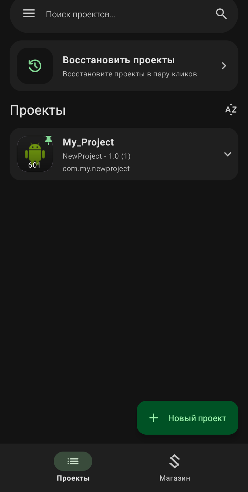
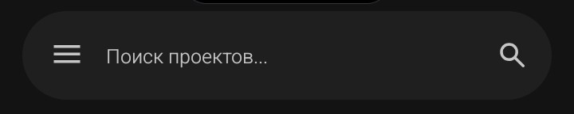
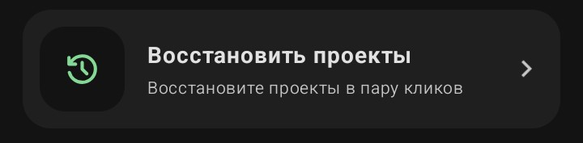
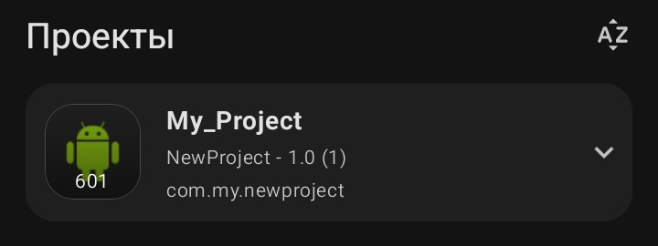
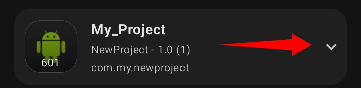
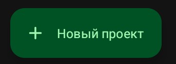
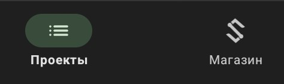

Главный экран (Список проектов)

Это первое, что вы видите при запуске приложения. Данный экран предназначен для управления вашими проектами.
·
Поисковая строка (вверху):

Позволяет быстро найти нужный проект, если у вас их накопилось много. Просто введите название, и список отфильтруется.
·
Восстановить проекты:

Кнопка с иконкой часов. Если вы случайно удалили проект, нажатие сюда откроет меню восстановления. Важно: восстановить можно только те проекты, которые были удалены недавно, и функция работает, если у вас включена синхронизация или есть резервные копии.
·
Раздел «Проекты»:

Здесь отображаются все ваши приложения в виде карточек.
·
Иконка проекта:
Слева от названия. По умолчанию стоит стандартная иконка Android (зеленый робот), но вы можете изменить её в настройках конкретного проекта.
·
Название проекта:
Крупный текст (например, My_Project).
·
Техническая информация:
Мелкий текст под названием (например, NewProject - 1.0 (1)). Здесь указано внутреннее имя, версия приложения и код версии.
·
Название пакета:
Строка вида com.my.newproject. Это уникальный идентификатор вашего приложения в системе Android. Его лучше не менять без необходимости.
·
Кнопка меню (стрелка вниз):

Находится справа от карточки проекта. Нажатие на нее открывает дополнительное меню действий (о нем мы поговорим в следующем подпункте).
·
Кнопка «+ Новый проект» (внизу справа):

Главная кнопка для начала работы. Нажмите на нее, чтобы создать новый пустой проект и приступить к его разработке.
·
Нижняя панель навигации:

Переключает вас между разделом «Проекты» (текущий экран) и «Магазин» (где можно скачать готовые шаблоны, блоки или компоненты от других пользователей).